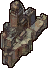
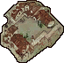
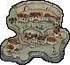
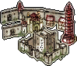
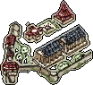
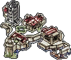
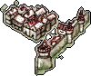
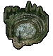

- Adopting EET naming conventions for BG1 resources
- Adding support for EET chapters/journal system
- Working with files that are merged during installation
- Detecting EET within WeiDU code
- Trigger filtering across BG1, SoD, BG2:SoA, BG2:ToB
- Adding AreaType to BG1 ARE files
- Detecting mods installed on BG:EE
- Adding support for mods installable on BG:EE previous to installing EET on BG2:EE
- Adding support for shattering items (iron crisis) system in BG1 portion of the game
- Importing more items to BG2
- Adding support for NPC transition system
- Workaround for CalanderDay command in SoD/BG2 portion of the game
- Adding new animations
- Adding support for EET Worldmap
Adopting EET naming conventions for BG1 resources
If your mod is designed to work not only with EET but also other platforms you should consider using either:
- cpmvars variable libraries - a set of variable declaration for BG:EE/BGT/Tutu/EET. INCLUDE each of these TPA files using GAME_IS WeiDU command, depending on each platform. These will cover all area names, area scripts, NPC dialogue and some other differences, allowing you to code everything with the same WeiDU code (by replacing resource name with variable). If some resource is not implemented here you can expand it to cover all your needs. It's a well known way of coding, with plenty of examples in released mods, so let's focus only on new additions related to EET.
- eet_var - used to add EET "_" suffix at the end of files. Other platforms will return nothing for it, so the letter is added only for EET. It can be used to properly reference BG1 resources that are not already handled by existing cpmvars. Take a look at EET conventions section if you have problem understanding why exactly this variable is handy.
- BGT_VAR - not exactly new addition (it already existed with the same purpose for BGT) but still very important for EET. It can be used as trigger filter to shutdown of D and BAF blocks after BG1 content. It adds following trigger: GlobalLT("ENDOFBG1","GLOBAL",2). Content filtering is explained in later part of this document (consider adding more filtering variables to your copy of cpmvars if you need them).
- sod_chapter_1-7, bg2_chapter_1-10 - variables that should replace SoD/BG2 chapter numbers in your code. More information in this section.
- wmp_xCoord_BG1, wmp_yCoord_BG1, wmp_xCoord_SoA, wmp_yCoord_SoA, wmp_mapIcon_BG1, wmp_mapIcon_ToB, wmp_worldmap_ToB - a bunch of variables that can be used to properly patch EET Worldmap with the same code as in other platforms. They have been explained in this section. - BG1 Platform-Abstraction Layer (BG1PAL) - a resource-name abstraction library for the different versions of Baldur's Gate. It converts canonical resource names into the appropriate form for the current platform via the function fl#bg1pal, which is available both as an action and a patch function. All resource names and resource types are supported. The input name is the one from BG1/BG:EE. For more extensive documentation, please refer to the file readme.html distributed with this resource.
You can also patch files directly using EET_modConverter tool that has custom version of Platform Conversion Utility in it, specialized in converting BG:EE and BGT code and resources to adopt EET naming convention. The tool will print all changes it makes into the log file, so you can review them if they are really needed. "Patching (...)" in log means that the input file has been patched and has been copied to output directory of the tool. "Analyzing (...)" means that the tool found an instance of the resource in tp2/tph/tpp/tpa files that didn't have extension provided. In such case the file is not patched but you should manually check if suggested change is warranted. Keep in mind that PCU part of this tool is designed for mods with BG1/BG:EE content only. You should not use it for mods with BG2 resources/code, unless you really know you're doing. Supported files that this tool can automatically convert: TBL, GAM, ARE, BAF, BCS, CRE, D, DLG, EFF, ITM, SPL, STO, TRA, TP2, TPH, TPP, TPA, VVC, WED, WMP. Other than renaming and patching files to use EET naming convention it will also handle converting ARE Song references to use EET song playlist.
Adding support for EET chapters/journal system
As explained in this section after patch 1.4 for BG2:EE, EET will use continuous journal/chapters system through whole game instead of resetting them over after each campaign. Sounds like a nightmare compatibility wise, right? Well... not really. All changes to your code can be implemented automatically without any effort on your part. There are 2 ways do it:
- EET_modConverter - this tool can be used to automatically convert any SoD, BG2 and ToB code to use cpmvars like system for chapters. It will patch all BAF, D, TP2, TPH, TPP, TPA files to use variables instead of numbers whenever SetGlobal, Global, GlobalGT, GlobalLT related to chapter number is used in your code. Variable declaration depending on platform will be also automatically added to ALWAYS section of tp2 file (you can remove this additional code if you already use cpmvars variable libraries).
- EET_functions.tph - this file contains several functions related to EET compatibility patching. Among other things it contains an action function called EET_JOURNAL which can be used in your code to patch files designed for other platforms on the fly during mod installation. Here is example how it's meant to be used:
ACTION_DEFINE_ARRAY arrayName BEGIN ~modDir/AERIE.d~ ~%var%/ALARM25.baf~ ~modDir/code.tph~ ~override/AERIE.bcs~ END
LAF ~EET_JOURNAL~
INT_VAR
journal_game = 1 //0 - BG2 (current chapter value + 14); 1 - SoD (current chapter value + 7) (default = 0)
journal_patch_mode = 1 //0 - replace with values; 1 - replace with variables (default = 0)
STR_VAR
journal_array = EVAL ~arrayName~ //array with files to patch (supports: d, dlg, baf, bcs, and any text file with code)
END
Working with files that are merged during installation
EET is installed in two steps - main component on a clean BG2:EE, and second component at the end, after any other mods. This second step is used to automatically merge BG1, SoD, BG2, ToB files that are normally controlled by PDIALOG.2DA and INTERDIA.2DA. You need to know following things when working natively with EET:
- BALDUR.BCS / BALDUR25.BCS - the game now uses BALDUR.BCS global script during whole game. BALDUR25.BCS is no longer used even in Throne of Bhaal. The vanilla script has been expanded with all relevant content from BG:EE global script (4 new blocks) as well as ToB "25" version of it (6 new blocks) using standard trigger filtering. Mods that supports EET should always patch BALDUR.BCS instead of BALDUR25.BCS
- JOIN / POST / BANTER dialogues and DREAM scripts - these files are normally automatically assigned by PDIALOG.2DA and INTERDIA.2DA. In EET it's also true but the platform doesn't use ToB and BG1 variants of these files. To not introduce changes in how cross-platform coding is usually handled, EET does the merging of vanilla content as well as updating state numbers in dialogues and references in scripts and cre files automatically at the end. Files should be patched exactly the same as you would do in vanilla games. No need to worry about state numbers (same as in vanilla games) or additional trigger filtering. For example when you want to add content to BG1, BG2 and ToB Neera join dialogue files than you should do it by patching NEERAJ_.DLG (BG1 file uses standard renaming due to conflict with BG2 file), NEERAJ.DLG and NEERA25J.DLG. When all other mods are installed and files have already all relevant changes, EET second component will convert them to use this system.
- Merge them yourself using proper trigger filtering, so they are relevant only during part of the story (not really worth it if your mod supports cross-platform coding)
- Or use pre-made EET_NPC_ENDMERGE action function, available within EET_functions.tph:
New BG1 NPCs added by mods don't need any merging. If your mod adds BG2 joinable NPC with separate JOIN / POST / BANTER dialogue files and DREAM scripts for SoA and ToB than you can add EET compatibility in 2 ways:
LAF ~EET_NPC_ENDMERGE~ STR_VAR dv = "NPCDeathVariable" END
Above code will generate array based on what has been included in PDIALOG.2DA and INTERDIA.2DA and than append it to EET/lib/EET_end.tph file. This way your NPC will be converted to use this system at the end of installation (after all other mods are installed).
Detecting EET within WeiDU code
- There is a new WeiDU parameter used with GAME_IS command for EET detection: GAME_IS ~eet~
- EET is also detectable with: ENGINE_IS ~bg2ee~ and GAME_INCLUDES ~bg2~ and/or ~soa~ and/or ~tob~
Once again EET_modConverter may be handy if you need to replace many instances of GAME_IS command in your code, as the tool has an option to do it automatically.
Trigger filtering across BG1, SoD, BG2:SoA, BG2:ToB
EET uses following GLOBAL in-game variable filters for vanilla campaigns to shut off content that no longer should show up after certain point of the story.
- CHAPTER - that's an obvious way to handle things. Unlike BGT, EET will soon use continuous journal/chapter system, so the game will consist of 24 chapters in total. You can use this variable reliably for this purpose (after patch 1.4 is released for BG2:EE).
- ENDOFBG1 - variable will return 1 right after you kill Sarevok. It is set to 2 after Siege of Dragonspear -> Shadows of Amn transition. In other words you can use it to filter content designed only for BG:EE part of the story (or only for BG2 if you assigned the trigger to check if the result is 2).
- ENDOFBG2 - variable is set to 2 in the first area of Throne of Bhaal expansion (AR4000.BCS)
ENDOFBG1 and ENDOFBG2 variables are correctly set even if you start the game in BG2 or ToB, so they should be always reliable for content filtering.
There may be situations where you want to filter content to show up (or not) when party is returning to old areas. For this purpose EET added new "BG1AREA" entry to AREATYPE.IDS. You can check if the current area is part of BG1 campaign via following triggers:
- AreaType(BG1AREA) - returns true only if the active CRE is in one of the BG1/SoD areas (areas added by mods located on BG1 landmass also should be patched to use it).
- !AreaType(BG1AREA) - returns true only if the active CRE is NOT in one of the BG1/SoD areas (which means BG2/ToB or far away lands added by mods).
If you need more precision with detecting areas you can also use additional AreaCheck(S:ResRef*) triggers.
Adding AreaType to BG1 ARE files
Either patch area with this WeiDU code during your mod installation:
WRITE_SHORT 0x48 THIS | (1 << BG1AREA)
Or use pre-made EET_AREATYPE action function, available within EET_functions.tph, that will do it on the fly for all areas listed in array:
ACTION_DEFINE_ARRAY arrayName BEGIN ~modDir/name.are~ ~%var%/name.are~ ~override/name.are~ END
LAF ~EET_AREATYPE~
STR_VAR
areatype_array = EVAL ~arrayName~ //array with ARE files to patch
END
Detecting mods installed on BG:EE
EET has limited support for BG:EE mods installed on BG:EE previous to installing EET on BG2:EE. Mods installed this way are treated exactly the same as vanilla resources and end up part of the BG2:EE EET installation. So, how can other mods detect if a particular mod has been installed on BG:EE? There are 2 ways to do it:
- dummy files are often used by mods to make them detectable by other mods. They are copied to EET override directory during installation, so can be normally detected via FILE_EXISTS_IN_GAME WeiDU command.
- WeiDU.log file from BG:EE is copied to main directory as "WeiDU-BGEE.log", which allows modders to use workarounds for existing WeiDU functions. Here are few examples using BG1 NPC Project component 0, any language:
//works the same as REQUIRE_COMPONENT
REQUIRE_PREDICATE ((FILE_EXISTS ~WeiDU-BGEE.log~) AND (FILE_CONTAINS ~WeiDU-BGEE.log~ ~BG1NPC\.TP2. #[0-9]+ #0 ~)) ~~
//works the same as FORBID_COMPONENT
REQUIRE_PREDICATE ((!FILE_EXISTS ~WeiDU-BGEE.log~) OR (!FILE_CONTAINS ~WeiDU-BGEE.log~ ~BG1NPC\.TP2. #[0-9]+ #0 ~)) ~~
//works the same as MOD_IS_INSTALLED
ACTION_IF (FILE_EXISTS ~WeiDU-BGEE.log~) AND (FILE_CONTAINS ~WeiDU-BGEE.log~ ~BG1NPC\.TP2. #[0-9]+ #0 ~) BEGIN
//do something if component has been detected
END ELSE BEGIN
//do something if component has NOT been detected
END
Of course if your mod is meant to also detect the mod installed natively than you should nest above mentioned code with vanilla WeiDU commands used for mod detection.
Overall this workaround doesn't sound like a very useful thing because BG:EE mods usually don't affect BG2:EE content, so the need for additional check for them in BG2:EE mods is not common. The ones affected are usually installed on BG:EE too, so any WeiDU mod detection command works correctly at that time. And the more complicated mods (such as BG1 NPC Project) already uses dummy files, so they are detectable without any hassle anyway.
Adding support for mods installable on BG:EE previous to installing EET on BG2:EE
If you're not planning to convert your BG:EE mod to work natively with EET, you may be interested in a solution that treats mods installed on BG:EE (previous to installing EET on BG2:EE) as vanilla content, which means all new BG:EE resources are converted on the fly with vanilla files. For more information how to achieve this please take a look at BGEE_to_EET_mod_checker tool readme file.
Adding support for shattering items (iron crisis) system in BG1 portion of the game
Patch items that you want to add into iron crisis shattering pool with following action function, available within EET_functions.tph. It will remove BG:EE/Tutu/BGT/EET implementation (if already present) and add EET item shattering system to weapons, armors, shield and helmets listed in the array.
ACTION_DEFINE_ARRAY arrayName BEGIN ~modDir/weapon.itm~ ~modDir/armor.itm~ ~%var%/shield.itm~ ~override/helmet.itm~ END
LAF ~EET_IRON_CRISIS~
STR_VAR
shattering_array = EVAL ~arrayName~ //array with files to patch (supports: weapons, armors, shields, helmets)
END
Importing more items to BG2
As explained in Item importation description it's easy to import more items to BG2, using the same AR0602.BCS code that works in vanilla BG2. In order to prevent the item to be dropped during transition you should append it to K#IMPORT.2DA file.
Adding support for NPC transition system
As already explained EET uses new system for NPC transition from Siege of Dragonspear expansion to Shadows of Amn (currently transition starts after killing Sarevok, but it will be changed once SoD support is implemented) and from Shadows of Amn to Throne of Bhaal expansion. In order to make modder's life easier we've prepared a function designed to automatically add both types of transition to any kind of NPC mod. All you need to do to make your NPC fully compatible with EET is disabling your normal patching code for AR4000.BCS, AR4500.BCS, FATESP.DLG and using EET_TRANSITION function instead.
If your BG2 NPC is meant to have BG1->BG2 transition than you should add additional Global("%dv%PartyBG1","GLOBAL",0) trigger (where %DV% is death variable of your CRE) in the code that spawns new version of CRE file into BG2 area. This way such block won't trigger if the NPC is valid for migration from BG1 to BG2. For example:
//this code will spawn new version of CRE if the transition didn't occur and CRE was not left dead in BG1
IF
Global("MinscImport","MYAREA",0)
Global("MinscPartyBG1","GLOBAL",0)
!Dead("Minsc")
LevelGT(Player1,11)
THEN
RESPONSE #100
CreateCreature("Minsc12",[4029.2759],6)
SetGlobal("MinscImport","MYAREA",1)
Continue()
END
You can optionally specify SoA transition script in the function explained below. The script can be used to make some adjustments for BG2 portion of the game if needed. It is assigned to OVERRIDE script slot during transition and triggers as soon as you visit BG2 area where your NPC has been moved. Don't forget to replace the OVERRIDE script with the correct one at the end of the this transition script. For example:
IF
Global("ImoenImport","MYAREA",0) //use GLOBAL/LOCALS/AREA variable just to be sure that block will be true only once
LevelLT(Protagonist,13)
XPLT(Myself,400000)
THEN
RESPONSE #100
ChangeStat(Myself,XP,400000,SET)
Continue()
END
IF
Global("ImoenImport","MYAREA",0)
LevelGT(Protagonist,12)
XPLT(Myself,1200000)
THEN
RESPONSE #100
ChangeStat(Myself,XP,1200000,SET)
Continue()
END
IF
Global("ImoenImport","MYAREA",0)
THEN
RESPONSE #100
SetGlobal("ImoenImport","MYAREA",1)
DestroyItem("IMOENHP1")
CreateItem("STAF01",1,0,0)
CreateItem("CLCK14",1,0,0)
FillSlot(SLOT_ARMOR)
FillSlot(SLOT_WEAPON)
EquipMostDamagingMelee()
SetPlayerSound(Myself,30759,MORALE)
SetDialog("IMOEN10")
SetNumTimesTalkedTo(0)
SetGlobal("KickedOut","LOCALS",0)
ChangeAIScript("NPCMAGE1",CLASS)
ChangeAIScript("",RACE)
ChangeAIScript("IMOEN",OVERRIDE) //this action will end the script
END
Copy EET_functions.tph to your mod folder and use INCLUDE command to properly declare these new functions. You can use this example code for reference how the function is meant to be used:
LAF ~EET_NPC_TRANSITION~
INT_VAR
type = 1
//1 - BG1 NPC without BG2 content (NPC is disabled from game during SoA transition, mentioned but not summonable in ToB)
//2 - BG2 NPC without BG1 content (transition to ToB if joined the party at least once during SoA)
//3 - NPC with BG1 and BG2 content (full transition to SoA/ToB)
posX = 3198 //NPC X coordinate on SoA transition destination ARE
posY = 2837 //NPC Y coordinate on SoA transition destination ARE
face = 6 //NPC facing on SoA transition destination ARE
create_SoA = 0 //controls if new CRE should be spawned in SoA if NPC was killed in BG1 (no by default - 0)
default_ToB = 0 //controls if NPC should be spawnable in ToB when the game has been started in ToB (no by default - 0)
clean_ToB = 0 //cleans out existing EET code in FATESP.DLG, AR4000.BCS, AR4500.BCS for DV specified in clean_ToB_DV
STR_VAR
dv = "IMOEN2" //Death Variable (script name) of the NPC (must be the same in BG1/SoD/BG2/ToB)
are = "AR0602" //ARE file name where NPC should be moved during SoA transition
transition_SoA = "" //script assigned to override slot during transition, should be manually replaced with override_SoA
override_BG1 = "IMOEN_" //name of the override NPC script in BG1
override_SoA = "IMOEN2" //name of the override NPC script in SoA
override_ToB = "IMOEN25" //name of the override NPC script in ToB
dialog_ToB = "IMOEN25A" //name of the dialogue file used after spawning NPC in ToB
string = "@1" //FATESP summon text (example: "Bring me Quayle, the gnome cleric/illusionist.") or TRA string number
stringPosDV = "" //set the DV of NPC right below your response (used for sorting FATESP responses alphabetically)
//Aerie, Ajantis, Alora, Anomen, Baeloth, Branwen, Cernd, Coran, Dorn, Dynaheir, Edwin, Eldoth, Faldorn, Garrick
//HaerDalis, Hexxat, Imoen2, Jaheira, Jan, Kagain, Keldorn, Khalid, Kivan, Korgan, Mazzy, Minsc, Montaron, Nalia
//Neera, Quayle, Rasaad, Safana, SharTeel, Skie, Tiax, Viconia, Valygar, Wilson, Xan, Xzar, Yeslick, Yoshimo
//variable not set (default) = NPC name appended at the end of summoning list
SummonedVar = "" //set it only if you want to use different var name than %dv%Summoned (useless in most cases)
SpawnPlaneVar = "" //set it only if you want use different var name than %dv%SpawnPlane (useless in most cases)
clean_ToB_DV = "" //if clean_ToB = 1 existing code for this DV will be removed from FATESP.DLG, AR4000.BCS, AR4500.BCS
END
//BG1 NPC without BG2 content
LAF ~EET_NPC_TRANSITION~
INT_VAR
type = 1
STR_VAR
dv = "IMOEN2"
override_BG1 = "IMOEN_"
string = "@1"
END
//BG2 NPC without BG1 content
LAF ~EET_NPC_TRANSITION~
INT_VAR
type = 2
STR_VAR
dv = "IMOEN2"
override_SoA = "IMOEN2"
override_ToB = "IMOEN25"
dialog_ToB = "IMOEN25A"
string = "@1"
END
//NPC with BG1 and BG2 content (type = 3 can be also used to add transition into vanilla BG1 NPC without it)
LAF ~EET_NPC_TRANSITION~
INT_VAR
type = 3
posX = 3198
posY = 2837
face = 6
STR_VAR
dv = "IMOEN2"
are = "AR0602"
override_BG1 = "IMOEN_"
override_SoA = "IMOEN2"
override_ToB = "IMOEN25"
dialog_ToB = "IMOEN25A"
string = "@1"
END
//type of transition depends on if separate mod with type = 1 transition has been installed
ACTION_IF MOD_IS_INSTALLED ~NPCName/NPCName.tp2~ ~0~ BEGIN
OUTER_SET type_var = 3 //this will change type of transition from 1 to 3
END ELSE BEGIN
OUTER_SET type_var = 2 //BG1 version of NPC is not installed, so just add BG2 only transition
END
LAF ~EET_NPC_TRANSITION~
INT_VAR
type = type_var
posX = 3198 //won't be used if type_var = 2
posY = 2837 //won't be used if type_var = 2
face = 6 //won't be used if type_var = 2
STR_VAR
dv = "IMOEN2"
are = "AR0602"
override_BG1 = "IMOEN_" //won't be used if type_var = 2
override_SoA = "IMOEN2"
override_ToB = "IMOEN25"
dialog_ToB = "IMOEN25A"
string = "@1"
END
You can see more examples in EET/lib/transition.tph file. It is preferable to use EET_TRANSITION than manually patching files. This way if anything regarding transition will be changed in future you won't need to edit your code but just replace TPH file with updated function declaration. For those interested how exactly it works or those who need to include additional REPLACE_TEXTUALLY patching within outcome code, here is an explanation what the function does:
- K#TELBGT.BCS (SoD -> BG2 transition script) is expanded if type = 1 or 3:
IF
Global("K#DoOnce%dv%","LOCALS",0)
Global("%dv%PartyBG1","GLOBAL",1)
!InMyArea("%dv%")
THEN
RESPONSE #100
MoveGlobalObjectOffScreen("%dv%",Player1)
Continue()
END
IF
Global("K#DoOnce%dv%","LOCALS",0)
Global("%dv%PartyBG1","GLOBAL",1)
InPartyAllowDead("%dv%")
THEN
RESPONSE #100
ActionOverride("%dv%",LeaveParty())
Continue()
END
IF
Global("K#DoOnce%dv%","LOCALS",0)
Global("%dv%PartyBG1","GLOBAL",1)
Dead("%dv%")
THEN
RESPONSE #100
SetGlobal("K#DoOnce%dv%","LOCALS",1)
%reset_PartyBG1% //%dv%PartyBG1 and SPRITEISDEAD variables set to 0 if create_SoA = 1
ActionOverride("%dv%",DropInventory())
ActionOverride("%dv%",DestroySelf())
Continue()
END
IF
Global("K#DoOnce%dv%","LOCALS",0)
Global("%dv%PartyBG1","GLOBAL",1)
!Dead("%dv%")
THEN
RESPONSE #100
SetGlobal("K#DoOnce%dv%","LOCALS",1)
ActionOverride("%dv%",DropInventory())
ActionOverride("%dv%",ApplySpellRES("K#DISPEL",Myself))
ActionOverride("%dv%",ChangeAIScript("",DEFAULT))
ActionOverride("%dv%",ChangeEnemyAlly(Myself,NEUTRAL))
ActionOverride("%dv%",MoveBetweenAreas("%are%",[%posX%.%posY%],%face%))
ActionOverride("%dv%",ChangeAIScript("%transition_SoA%",OVERRIDE) //override_SoA used if not specified
Continue()
END
- BG1 and/or BG2 local script are extend top with this code, which will flag the NPC with variable detectable during ToB transition and disable NPC that should no longer exist after certain part of the story:
IF
Global("ENDOFBG%game%","GLOBAL",0)
Global("%dv%PartyBG%game%","GLOBAL",0)
InParty(Myself)
THEN
RESPONSE #100
SetGlobal("%dv%PartyBG%game%","GLOBAL",1)
Continue()
END
IF
GlobalGT("ENDOFBG%game%","GLOBAL",0)
Global("%dv%PartyBG%game%","GLOBAL",0)
THEN
RESPONSE #100
DestroySelf()
END
- FATESP.DLG Fate Spirit summoning dialogue responses are expanded with following code:
IF ~ Global("%SummonedVar%","GLOBAL",0)
Dead("%dv%")
~ THEN REPLY %string% DO ~SetGlobal("%SummonedVar%","GLOBAL",2)
~ GOTO 10
IF ~ Global("%SummonedVar%","GLOBAL",0)
Global("%dv%PartyBG2","GLOBAL",0)
!Dead("%dv%")
~ THEN REPLY %string% DO ~SetGlobal("%SummonedVar%","GLOBAL",2)
~ GOTO 7
IF ~ Global("%SummonedVar%","GLOBAL",0)
Global("%dv%PartyBG2","GLOBAL",1)
!Dead("%dv%")
~ THEN REPLY %string% DO ~SetGlobal("%SummonedVar%","GLOBAL",1)
~ GOTO 9
END
- AR4000.BCS has additional code that will check if the NPC is currently in party or were at party at some point during BG1 and BG2. Setting %SummonedVar% to 2 removes NPC from Fate Spirit summon list. default_ToB set to 1 can be used to make NPC summonable by default in new game started in ToB expansion (in such case NEWGAME_TOB variable is set to 1) - this will REPLACE_TEXTUALLY first block in AR4000.BCS setting %dv%PartyBG2 variable to 1, which is not shown in below code.
IF
InParty("%dv%")
Global("%SummonedVar%","GLOBAL",0)
THEN
RESPONSE #100
ActionOverride("%dv%",ChangeAIScript("%override_ToB%",OVERRIDE))
SetGlobal("%SummonedVar%","GLOBAL",2)
END
IF
Global("%SummonedVar%","GLOBAL",0)
Global("%dv%PartyBG1","GLOBAL",0)
Global("%dv%PartyBG2","GLOBAL",0)
THEN
RESPONSE #100
SetGlobal("%SummonedVar%","GLOBAL",2)
Continue()
END
- AR4500.BCS is extended bottom with the code that migrates NPC from BG2 area to Pocket Plane:
IF
InParty("%dv%")
Global("%SummonedVar%","GLOBAL",0)
THEN
RESPONSE #100
ActionOverride("%dv%",ChangeAIScript("%override_ToB%",OVERRIDE))
SetGlobal("%SummonedVar%","GLOBAL",2)
END
IF
Global("NEWGAME_TOB","GLOBAL",0)
Global("%SummonedVar%","GLOBAL",1)
Global("%SpawnPlaneVar%","GLOBAL",0)
THEN
RESPONSE #100
CreateVisualEffect("SPPORTAL",[1999.1218])
Wait(2)
MoveGlobal("AR4500","%dv%",[1999.1218])
ActionOverride("%dv%",Face(S))
ActionOverride("%dv%",SetNumTimesTalkedTo(0))
ActionOverride("%dv%",ChangeAIScript("%override_ToB%",OVERRIDE))
ActionOverride("%dv%",SetDialog("%dialog_ToB%"))
ActionOverride("%dv%",SetGlobal("KickedOut","LOCALS",0))
SetGlobal("%SpawnPlaneVar%","GLOBAL",1)
END
Depending on which variables you set in EET_TRANSITION code, different combination of above patching will take place.
Workaround for CalanderDay command in SoD/BG2 portion of the game
CalanderDay(I:Day*) / CalanderDayGT(I:Day*) / CalanderDayLT(I:Day*) triggers can be used to detect if the current day is the day specified / after the day specified / before the day specified. What about situations when you need to use it in Siege of Dragonspear or Baldur's Gate 2 portion of the game? We don't know how many days it will take CHARNAME party to finish first 7 chapters, so the vanilla command becomes less useful. That is why EET introduced days counter that can be used as a workaround here. For easier explanation let's take a look at how EET resolved this problem for Town Crier in Athkatla, who should tell something new each 3 passing days.
Town Crier local script (DS3483.BCS) has been expanded with the below code that assigns K#TOWNC01_day variable to use K#DaysPassed value (in EET this variable counts passed in-game days). From now after each day the value of K#TOWNC01_cnt will be increased by 1. You don't need to be near NPC to make it work - the K#TOWNC01_cnt variable will be updated correctly as soon as you return to area with this NPC.
IF
Global("K#DoOnce","LOCALS",0)
Global("K#TOWNC01_cnt","GLOBAL",0)
THEN
RESPONSE #100
SetGlobal("K#DoOnce","LOCALS",1)
SetGlobal("K#TOWNC01_cnt","GLOBAL",1) //modify this value if you want to change starting day
SetGlobal("K#TOWNC01_day","GLOBAL",0) //just to be sure
AddGlobals("K#TOWNC01_day","K#DaysPassed")
Continue()
END
IF
Global("K#DoOnce","LOCALS",1)
GlobalsGT("K#DaysPassed","K#TOWNC01_day")
THEN
RESPONSE #100
IncrementGlobal("K#TOWNC01_cnt","GLOBAL",1)
IncrementGlobal("K#TOWNC01_day","GLOBAL",1)
Continue()
END
Now that we have a working day tracking system we should modify TOWNC01.DLG to replace CalanderDayLT trigger with variable check instead, like this:
COPY_EXISTING ~TOWNC01.DLG~ ~override~
DECOMPILE_AND_PATCH BEGIN
REPLACE_TEXTUALLY ~CalanderDayLT(~ ~GlobalLT("K#TOWNC01_cnt","GLOBAL",~
END
BUT_ONLY
There you go - a working workaround for CalanderDayLT. You can adjust the code to easily create workarounds for CalanderDay and CalanderDayGT too. In this example K#TOWNC01_cnt is a GLOBAL variable due to multiple instances of TOWNC01.CRE in different areas and we want them all to use the same days passed counter. You can change it to use LOCALS variable instead if the counter should be tracked only for 1 instance of NPC.
Adding new animations
Unlike classic games Infinity Engine distributed with Enhanced Edition games doesn't have hardcoded limit for animations, so assigning new animations to existing vanilla slots is considered a bad practice now. There are 2 ways to implement new animations to the game:
- INI files - engine feature introduced in IWD:EE and BG2:EE (patch 1.3). INI files, named afer the offset used for particular animation, contains code that was previously hardcoded within EXE file. Unfortunately they are not documented on IESDP yet, but many options available are pretty self-explanatory. EET distributes INI files from IWD:EE that cover all vanilla BG:EE and BG2:EE animations (you can get INI files for animations added by IWD:EE if you install separate mod called IWD-in-EET). Please refer to them for example usage. Probably the most interesting thing about them is optional "new_palette=" entry under [general] section that allows us to assign external palette BMP files that will be used with animation, which means there is no point in distributing animation with mod if it's just a re-palleted version of existing one - INI file with new offset and palette reference will do the job.
- EXTANIM.2DA, EXTSPEED.2DA - alternative to above implementation and another engine feature introduced by Beamdog. Hopefully IESDP will have full documentation for these files at some point. For now refer to what has been said by Scott Brooks in this topic. Example code can be found in viader's Extended Animations mod.
EET promotes common standard introduced in IWD:EE and viader's Extended Animations mod. If you are creating mod compatible with EET you should follow what has been said by viader regarding animation slot offsets, in above mentioned topic:
0xE240 - 0xE2FF - reserved by Extended Animations 0xE330 - 0xE3FF - free 0xE440 - 0xE4FF - free 0xE530 - 0xE5FF - free 0xE620 - 0xE6FF - free 0xE730 - 0xE7FF - free 0xE850 - 0xE8FF - free 0xE920 - 0xE9FF - free 0xEA30 - 0xEAFF - free 0xEB30 - 0xEBFF - free 0xEC30 - 0xECFF - free 0xED30 - 0xEDFF - free 0xEE20 - 0xEEFF - free
Adding support for EET Worldmap
EET Worldmap consists of BG1, BG2, ToB maps merged together (after SoD release it will be expanded to also cover land added by this expansion). Thanks to such implementation it's easy to add new areas to it, sharing the same code as BG1/Tutu worldmap (BG:EE one uses a little different coordinates for icons), BG2/BG2:EE and ToB worldmaps. For EET you can use the same coordinates as in vanilla maps but with added X and Y correction that represents where the old map starts compared to the upper-left corner of the EET map. Preferable way of doing so is using cpmvars variable libraries (this way updating X/Y coordinate correction after EET Worldmap is expanded will be a matter of replacing an external file). BG1 and ToB icons have been appended to MAPICONS.BAM file, so you also need to take it into account. EET uses the same icon numbers as BP-BGT Worldmap.
Here is an example code that is compatible with different platforms at the same time:
//either use cpmvars that have these variables set or add this variable declaration somewhere in your tp2 code
ACTION_IF GAME_IS ~eet~ BEGIN
OUTER_SET wmp_xCoord_BG1 = 373 //in relation to BG1/Tutu WORLDMAP.WMP add 373 px correction to X coordinate
OUTER_SET wmp_yCoord_BG1 = 1330 //in relation to BG1/Tutu WORLDMAP.WMP add 1330 px correction to Y coordinate
OUTER_SET wmp_xCoord_SoA = 0 //in relation to BG2/BG2:EE WORLDMAP.WMP add 0 px correction to X coordinate
OUTER_SET wmp_yCoord_SoA = 2283 //in relation to BG2/BG2:EE WORLDMAP.WMP add 2283 px correction to Y coordinate
OUTER_SET wmp_xCoord_ToB = 893 //in relation to BG2/BG2:EE WORLDM25.WMP add 893 px correction to X coordinate
OUTER_SET wmp_yCoord_ToB = 3011 //in relation to BG2/BG2:EE WORLDM25.WMP add 1681 px correction to Y coordinate
OUTER_SET wmp_mapIcon_BG1 = 29 //in relation to Tutu YAC22MAP.BAM add 29 cycles correction to map icon
OUTER_SET wmp_mapIcon_ToB = 85 //in relation to BG2 25MAPIC.BAM add 85 cycles correction to map icon
OUTER_SPRINT wmp_worldmap_ToB "worldmap" //when editing ToB worldmap use WORLDMAP.WMP instead of WORLDM25.WMP
END ELSE BEGIN
OUTER_SET wmp_xCoord_BG1 = 0
OUTER_SET wmp_yCoord_BG1 = 0
OUTER_SET wmp_xCoord_SoA = 0
OUTER_SET wmp_yCoord_SoA = 0
OUTER_SET wmp_xCoord_ToB = 0
OUTER_SET wmp_yCoord_ToB = 0
OUTER_SET wmp_mapIcon_BG1 = 0
OUTER_SET wmp_mapIcon_ToB = 0
OUTER_SPRINT wmp_worldmap_ToB "worldm25"
END
//example code that adds new area to BG1/Tutu/EET WORLDMAP.WMP
LAF sc#addWmpAre
INT_VAR
mapIcon = 5 + wmp_mapIcon_BG1
xCoord = 240 + wmp_xCoord_BG1
yCoord = 130 + wmp_yCoord_BG1
STR_VAR
areName = ~fileName~
strName = "nameOfTheArea"
strDesc = "nameOfTheArea"
END
//example code that adds new area to BG2/BG2:EE/EET WORLDMAP.WMP
LAF sc#addWmpAre
INT_VAR
mapIcon = 5
xCoord = 240 + wmp_xCoord_SoA
yCoord = 130 + wmp_yCoord_SoA
STR_VAR
areName = ~fileName~
strName = "nameOfTheArea"
strDesc = "nameOfTheArea"
END
//example code that adds new area to BG2/BG2:EE WORLDM25.WMP and to EET WORLDMAP.WMP
LAF sc#addWmpAre
INT_VAR
mapIcon = 5 + wmp_mapIcon_ToB
xCoord = 240 + wmp_xCoord_ToB
yCoord = 130 + wmp_yCoord_ToB
STR_VAR
areName = ~fileName~
strName = "nameOfTheArea"
strDesc = "nameOfTheArea"
worldmap = EVAL "%wmp_worldmap_ToB%"
END
For reference here is a table listing all icons available in EET MAPICONS.BAM file and icon numbers used by EET and other platforms.
| Icon | EET / BP-BGT Worldmap | Tutu | BG2 / BG2:EE (SoA map) | BG2 / BG2:EE (ToB map) |
|---|---|---|---|---|
 |
5 | - | 5 | - |
| 6 | - | 6 | - | |
| 7 | - | 7 | - | |
 |
8 | - | 8 | - |
 |
9 | - | 9 | - |
| 10 | - | 10 | - | |
|  | 11 | - | 11 | - |
| 12 | - | 12 | - | |
 |
13 | - | 13 | - |
| 14 | - | 14 | - | |
 |
15 | - | 15 | - |
| 16 | - | 16 | - | |
| 17 | - | 17 | - | |
 |
18 | - | 18 | - |
| 19 | - | 19 | - | |
 |
20 | - | 20 | - |
|  | 21 | - | 21 | - |
| 22 | - | 22 | - | |
 |
23 | - | 23 | - |
| 24 | - | 24 | - | |
|  | 25 | - | 25 | - |
| 26 | - | 26 | - | |
 |
28 | - | 28 | - |
 |
29 | 0 | - | - |
|  | 30 | 1 | - | - |
| 31 | 2 | - | - | |
|  | 32 | 3 | - | - |
 |
33 | 4 | - | - |
 |
34 | 5 | - | - |
 |
35 | 6 | - | - |
|  | 36 | 7 | - | - |
|  | 37 | 8 | - | - |
 |
38 | 9 | - | - |
| 39 | 10 | - | - | |
 |
40 | 11 | - | - |
| 41 | 12 | - | - | |
| 42 | 13 | - | - | |
| 43 | 14 | - | - | |
| 44 | 15 | - | - | |
| 45 | 16 | - | - | |
 |
46 | 17 | - | - |
| 47 | 18 | - | - | |
| 48 | 19 | - | - | |
| 49 | 20 | - | - | |
 |
50 | 21 | - | - |
| 51 | 22 | - | - | |
| 52 | 23 | - | - | |
 |
53 | 24 | - | - |
| 54 | 25 | - | - | |
 |
56 | 26 | - | - |
 |
57 | 27 | - | - |
| 58 | 28 | - | - | |
| 59 | 29 | - | - | |
| 61 | 30 | - | - | |
| 62 | 31 | - | - | |
 |
63 | 32 | - | - |
| 64 | 33 | - | - | |
 |
65 | 34 | - | - |
| 66 | 35 | - | - | |
| 67 | 36 | - | - | |
| 68 | 37 | - | - | |
 |
69 | 38 | - | - |
 |
70 | 39 | - | - |
| 71 | 40 | - | - | |
| 72 | 41 | - | - | |
 |
73 | 42 | - | - |
| 74 | 43 | - | - | |
| 75 | 44 | - | - | |
| 76 | 45 | - | - | |
 |
77 | 46 | - | - |
| 78 | 47 | - | - | |
| 79 | 48 | - | - | |
| 80 | 49 | - | - | |
 |
82 | 50 | - | - |
 |
83 | 51 | - | - |
| 84 | 52 | - | - | |
 |
90 | - | - | 5 |
| 91 | - | - | 6 | |
 |
92 | - | - | 7 |
| 93 | - | - | 8 | |
 |
94 | - | - | 9 |
 |
95 | - | - | 10 |
 |
96 | - | - | 11 |
| 97 | - | - | 12 | |
 |
98 | - | - | 13 |
 |
99 | - | - | 14 |
| 100 | - | - | 15 | |
 |
101 | - | - | 16 |
 |
102 | - | - | 17 |
|  | 106 | - | 29 (only in BG2:EE) | - |
| 107 | - | 31 (only in BG2:EE) | - | |
| 108 | - | 32 (only in BG2:EE) | - | |
| 109 | - | 33 (only in BG2:EE) | - | |
| 110 | - | 34 (only in BG2:EE) | - | |
| 111 | - | 30 (only in BG2:EE) | 18 (only in BG2:EE) |
| EET Worldmap reference for BG1/BG2/ToB areas (click to enlarge) Please visit this forum topic for a full Worldmap image as well as areas reference for compatible mods. |
 |